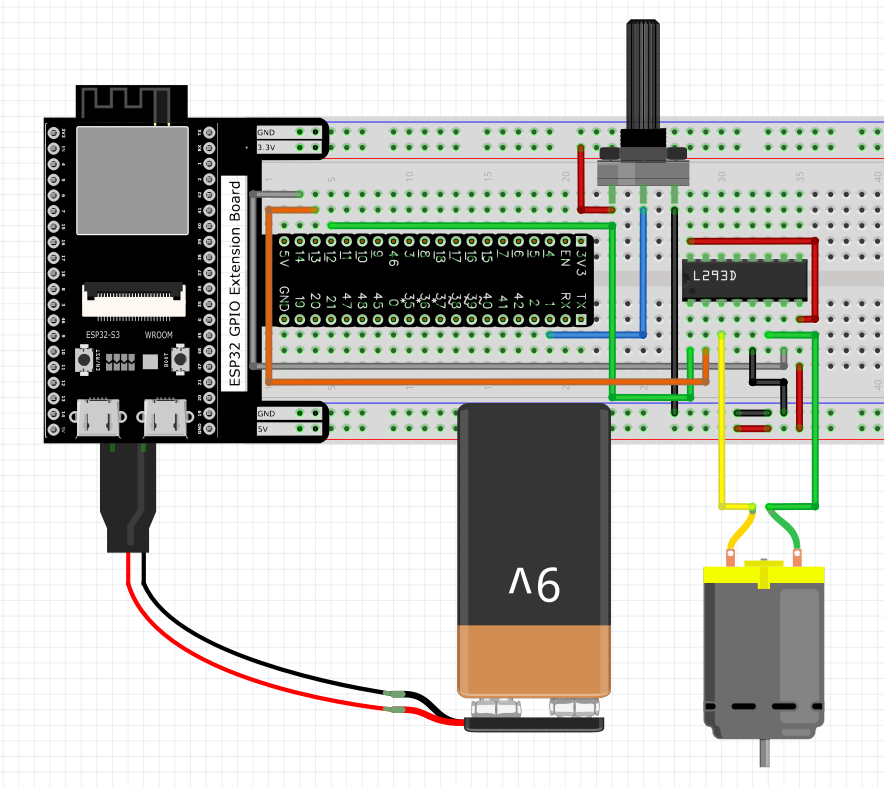
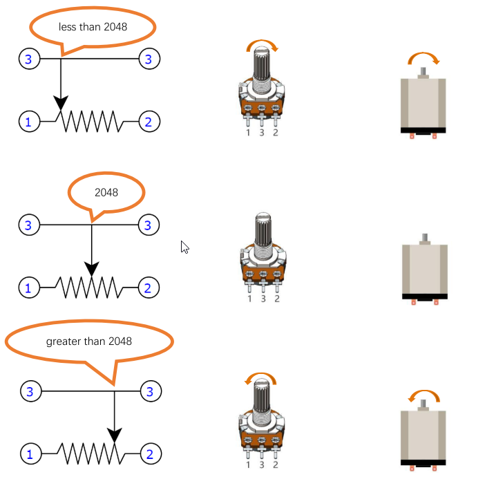

Chapter 15 Relay & Motor
In this chapter, we will learn a kind of special switch module, relay module.
Project 15.1 Control Motor with Potentiometer
Control the direction and speed of the motor with a potentiometer.
Component List
Raspberry Pi Pico W x1
830 Tie-Points Breadboard x1
L293D x1
9V Battery Connector x1
Potentiometer(10k) x1
Motor & Fan x1
Jumper Wire
Connect
Use caution when connecting this circuit, because the DC motor is a high-power component, do not use the power provided by the ESP32-S3 to power the motor directly, which may cause permanent damage to your ESP32-S3! The logic circuit can be powered by the ESP32-S3 power or an external power supply, which should share a common ground with ESP32-S3.
Note: the motor circuit uses A large current, about 0.2-0.3A without load.We rec ommend that you use a 9V battery to power the extension board.
Code
Move the program folder “Super_Starter_Kit_for_ESP32_S3/Python/Python_C odes” to disk(D) in advance with the path of “D:/Micropython_Codes”. Open “Thonny”, click “This computer” >> “D:” >> “Micropython_Codes” >> “15.2_Moto r_And_Driver” and double click “Motor_And_Driver.py”.
15.1_Motor_And_Driver

Click “Run current script”, rotate the potentiometer in one direction and the motor speeds up slowly in one direction. Rotate the potentiometer in the other direction and the motor will slow down to stop. And then rotate it in the original direction to accelerate the motor.
Code
The following is the program code:
from machine import ADC,Pin,PWM
import time
import math
in1Pin=Pin(13, Pin.OUT)
in2Pin=Pin(14, Pin.OUT)
enablePin=Pin(12, Pin.OUT)
pwm=PWM(enablePin,10000)
adc=ADC(Pin(1))
adc.atten(ADC.ATTN_11DB)
adc.width(ADC.WIDTH_12BIT)
def driveMotor(dir,spd):
if dir:
in1Pin.value(1)
in2Pin.value(0)
else :
in1Pin.value(0)
in2Pin.value(1)
pwm.duty(spd)
try:
while True:
potenVal = adc.read()
rotationSpeed = potenVal - 2048
if (potenVal > 2048):
rotationDir = 1;
else:
rotationDir = 0;
rotationSpeed=int(math.fabs((potenVal-2047)//2)-1)
driveMotor(rotationDir,rotationSpeed)
time.sleep_ms(10)
except:
pwm.deinit()